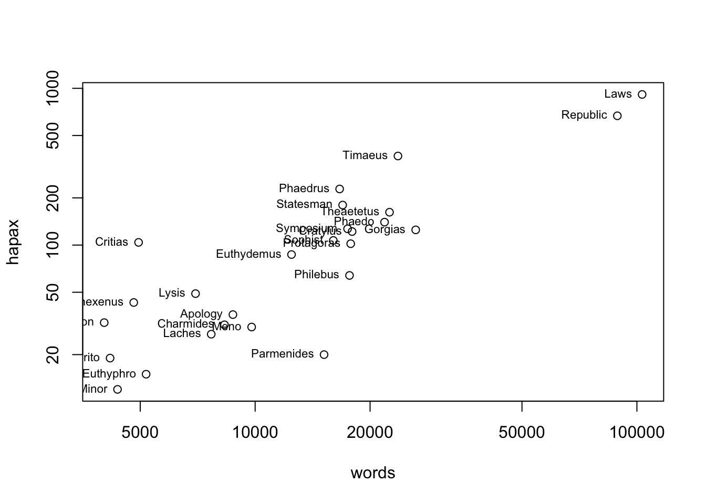

Тема 3 Визуализации
3.1 Базовый R
В R существуют три основные системы построения графиков, которые могут быть полезны для достижения разных целей. Базовый R – это самая старая система, и в ее основе лежит идея палитры художника2.
Идея заключается в том, что у вас есть чистый холст, на который вы добавляете что-то одно за другим: например, сначала вы создаете диаграмму рассеяния с несколькими точками, затем вы добавляете метки, линию регрессии, заголовки и т.п. Каждая деталь графика занимает еще одну строчку кода.
Это интуитивно понятная модель, потому что часто в самом начале, исследуя данные, мы часто не знаем, какой график мы хотим построить. Обычно мы начинаем это построение с функции plot(), а затем добавляем функции, которые аннотируют график. Вот простой пример на данных о гапаксах у Платона, которые мы видели раньше.
Чтобы построить диаграмму рассеяния (scatter plot), нужно передать функции plot() в качестве аргументов названия тех столбцов, которые мы хотим изобразить по осям x и y. Это можно записать так: plot(x, y). Или так: plot(y ~ x). Знак ~ (тильда) указывает на функцию.
Это можно записать и иначе: plot(hapax_plato$hapax ~ hapax_plato$words). Результат будет одинаковый.
Теперь беремся за палитру. Данные скучились в левом нижнем углу и потому плохо читаются. Мы можем пожертвовать двумя очень длинными диалогами (это “Государство” и “Законы”) и “приблизить” картинку, указав вручную границы осей.
Но так мы все-таки теряем какую-то информацию – а вдруг она важная? Еще один способ справиться со слипшимися данными – преобразовать их. Применим логарифмическое преобразование. Обратите внимание, как меняются значения на осях.
attach(hapax_plato)
options(scipen=999) # избавляет от научной нотации
plot(words, hapax, log = "xy")
# добавим текст
text(hapax ~ words, labels = dialogue, pos = 2, cex = 0.7)
Уже гораздо интереснее! Попробуем обозначить цветом и формой пересказанные и прямые диалоги. Форма задается внутри функции plot() при помощи атрибута pch. Числовые значения этого атрибута соответствуют следующим значкам. Мы используем 2, 3 и 5.
Добавить картинку: значения атрибута pch
Перестраиваем наш график.
attach(hapax_plato)
options(scipen=999) # избавляет от научной нотации
plot(words, hapax, log = "xy", col = c("darkblue", "darkgreen", "darkred")[group],
pch = c(2, 3, 5)[group])
text(hapax ~ words, labels = dialogue,
pos = 2, cex = 0.7, col = c("darkblue", "darkgreen", "darkred")[group])Некоторые названия перекрываютcя, но все равно намного понятнее. Теперь можем поменять шрифт и, например, добавить линию регрессии (не хватает легенды, но что-то уже нет сил).
attach(hapax_plato)
options(scipen=999) # избавляет от научной нотации
plot(words, hapax, log = "xy", col = c("darkblue", "darkgreen", "darkred")[group], pch = c(2, 3, 5)[group], family = "serif")
text(hapax ~ words, labels = dialogue,
pos = 2, cex = 0.7, col = c("darkblue", "darkgreen", "darkred")[group], family = "serif")
# добавим линию регрессии
my_lm <- lm(hapax_plato$hapax ~ hapax_plato$words)
abline(my_lm, lty = "dashed", col = "darkgrey", untf = T)
# и заголовок
title(main = "Число гапаксов в зависимости от длины диалога")При помощи графических параметров3 можно контролировать множество настроек. Но в этом и недостаток базовой графики. Не всем хватает терпения и вкуса этим заниматься, поэтому эта система сейчас не очень употребительна.
Мы построили только диаграмму рассеяния, но в базовом R можно делать и гистограммы, и диаграмму размаха, и другие графики.
Попробуйте интерпретировать график, который у нас получился. Прав ли был профессор Кэмпбелл, утверждая, что высокая доля гапаксов характерна для “поздних” текстов? Исходите из того, что ни для одного текста мы не знаем дату написания.
Судя по графику, количество гапаксов зависит от количества слов в тексте. Чем длиннее текст, тем больше вероятность встретить там редкое слово.
3.2 Lattice
Система Lattice (букв. “Решетка”) была разработана специально для анализа многомерных данных (sarkar2008?).
Тут должны быть графики цветочки
Например, мы сравниваем точность классификации текстов в зависимости от длины отрывка и количества слов-предикторов. Это уже три переменные (длина – количество слов – точность). Система решеток, или панелей, позволяет представить такие многомерные данные. Добавить ссылку
В базовом R это тоже можно сделать, изменив графические параметры:
x <- sample(1:20, 10)
y <- 2 * x - 5
par(mfrow = c(1,2)) # вот тут указываем число рядов и столбцов
plot(x, y)
plot(x, y)Но видно, что пространство при этом расходуется неэффективно. Кроме того, к таким графикам сложно создавать заголовки и подзаголовки, подбирать подписи и т.п. Все эти задачи решает Lattice.
Идея этой системы в том, что каждый график строится с помощью одного вызова функции. При этом необходимо сразу указать большое количество информации, чтобы у фунцкии было достаточно данных для построения графика.
library(lattice)
attach(hapax_plato)
# после вертикальной черты указана переменная, которая используется для группировки данных; в нашем случае номер группы (по Кэмпбеллу)
xyplot(hapax ~ words | group, data = hapax_plato,
scales=list(x=list(log=10))) # трансформация по одной осиНедостаток Lattice, однако, в том, что бывает сложно аннотировать отдельные панели, а также приходится сразу задавать весь график в одном вызове функции. Это не всегда удобно. После создания графика уже ничего нельзя добавить или убавить.
3.3 Ggplot2
Но настоящая графическая сила R – это пакет ggplot2. В его основе лежит идея “грамматики графических элементов” Лиланда Уилкинсона (мастицкий2017?), и он позволяет объединить достоинства базовой графики R и Lattice. С одной стороны, вы можете постепенно достраивать график, добавляя элемент за элементом; с другой стороны, множество параметров подбираются автоматически, как в Lattice.
3.3.1 Быстрое решение: qplot()
Настройки по умолчанию хорошо видно на графике ниже; их легко перенастроить.
library(ggplot2) # загружается сразу с tidyverse
options(scipen = 999)
qplot(words, hapax, data = hapax_plato, log = "xy")## Warning: `qplot()` was deprecated in ggplot2 3.4.0.
## This warning is displayed once every 8 hours.
## Call `lifecycle::last_lifecycle_warnings()` to see where this warning was
## generated.
Функция qplot() – это быстрое решение для задач визуализации.
В современных версиях ggplot использование функции qplot() не рекомендуется (deprecated), чтобы побудить пользователей изучать ggplot() как более совершенный инструмент для визуализаций.
В данном случае мы построили диаграмму рассеяния, используя логарифмическую трансформацию по двум осям. Можно также выделить цветом различные типы диалогов, изменить размер точек, их прозначность и т.п.
qplot(words, hapax, data = hapax_plato, log = "xy", col = group, size = 1.5) + theme(legend.position = "none")Линия тренда (сглаживающая линия) добавляется следующим образом:
## `geom_smooth()` using method = 'loess' and formula = 'y ~ x'Диаграмма размаха (о ней подробнее можно посмотреть здесь) удобна в тех случаях, когда необходимо представить обобщенную статиситческую информацию о распределении значений количественной переменной в разных группах.

Диаграмму размаха можно совместить с одномерной диаграммой рассеяния.
qplot(group, ratio, data = hapax_plato, geom = c("boxplot", "jitter"), color = group) # вместо color можно использовать shape, который отвечает за форму элементов
3.3.2 Слой за слоем: ggplot()
Для более детальной настройки графика рекомендууется использовать функцию ggplot(), которая имеет два основных аргумента: data и aes (англ. aesthetics); последняя присваивает эстетические атрибуты геометрическим объектам, которые используются на графике. Эти объекты могут слоями накладываться друг на друга (wickham2016?).
Посмотрим, как это работает, на примере, столбиковой диаграммы. Такая позволяет представить распределение как количественных, так и качественных переменных. Для примера возьмем датасет diorisis_meta, который хранит данные о древнегреческих текстах, доступных в репозитории Diorisis4.
## # A tibble: 784 × 5
## name title date genre subgenre
## <chr> <chr> <dbl> <chr> <chr>
## 1 Achilles Tatius Leucippe and Clitophon 120 Narrative Novel
## 2 Aelian De Natura Animalium 230 Technical Natural History
## 3 Aelian Epistulae Rusticae 230 Letters Letters
## 4 Aelian Varia Historia 200 Essays Miscellanea
## 5 Aeneas Tacticus Poliorcetica -350 Technical Military
## 6 Aeschines Against Ctesiphon -330 Oratory Oratory
## 7 Aeschines Against Timarchus -347 Oratory Oratory
## 8 Aeschines The Speech on the Embassy -336 Oratory Oratory
## 9 Aeschylus Agamemnon -458 Tragedy Tragedy
## 10 Aeschylus Eumenides -458 Tragedy Tragedy
## # ℹ 774 more rowsСтолбиковая диаграмма позволяет увидеть, тексты каких жанров чаще всего встречаются в этом корпусе.
library(tidyverse)
diorisis_meta %>%
group_by(genre) %>%
count() %>%
ggplot(aes(reorder(genre, n), n, fill = genre)) +
geom_bar(stat = "identity") +
coord_flip()Точечная диаграмма, или dotplot, подходит для тех случаев, когда мы исследуем распределение наблюдений для разных групп данных, причем наблюдений не очень много. Например, мы можем отразить распределение текстов в корпусе по годам. Категориальную переменную (например, жанр) можно дополнительно закодировать цветом (Подробнее).
diorisis_meta %>% ggplot(aes(date, fill = factor(genre))) +
geom_dotplot(binwidth = 10, stackdir = "centerwhole", binpositions = "all") +
scale_y_continuous(NULL, breaks = NULL) +
scale_x_continuous(breaks = scales::pretty_breaks(n = 10))
Различные группы данных можно выделять не только цветом и формой, но Категоризованный график – отдельный график для разных групп. Попробуем выяснить: сколько поджанров в каждом жанре?
diorisis_meta %>%
group_by(genre, subgenre) %>%
count %>%
filter(genre %in% c("Poetry", "Technical")) %>%
ggplot(aes(reorder(subgenre, n), n, fill = subgenre)) +
geom_col(show.legend = F) +
facet_wrap(~genre, scales = "free") + # вот здесь задаем группы
coord_flip()Подробнее с разными видами графиков мы познакомимся дальше.
3.4 Экспорт графиков из среды R
Способы:
- реализованные в R драйверы стандартных графических устройств;
- функция
ggsave() - меню программы RStudio.
# код сохранит pdf в рабочую директорию
pdf(file = "Diorisis.pdf")
diorisis_meta %>%
group_by(genre, subgenre) %>%
count %>%
filter(genre %in% c("Poetry", "Technical")) %>%
ggplot(aes(reorder(subgenre, n), n, fill = subgenre)) +
geom_col(show.legend = F) +
facet_wrap(~genre, scales = "free") +
coord_flip()
dev.off()
# еще один способ сохранить последний график
ggsave(
filename = "Diorisis.png",
plot = last_plot(),
device = "png",
scale = 1,
width = NA,
height = 500,
units = "px",
dpi = 300
)